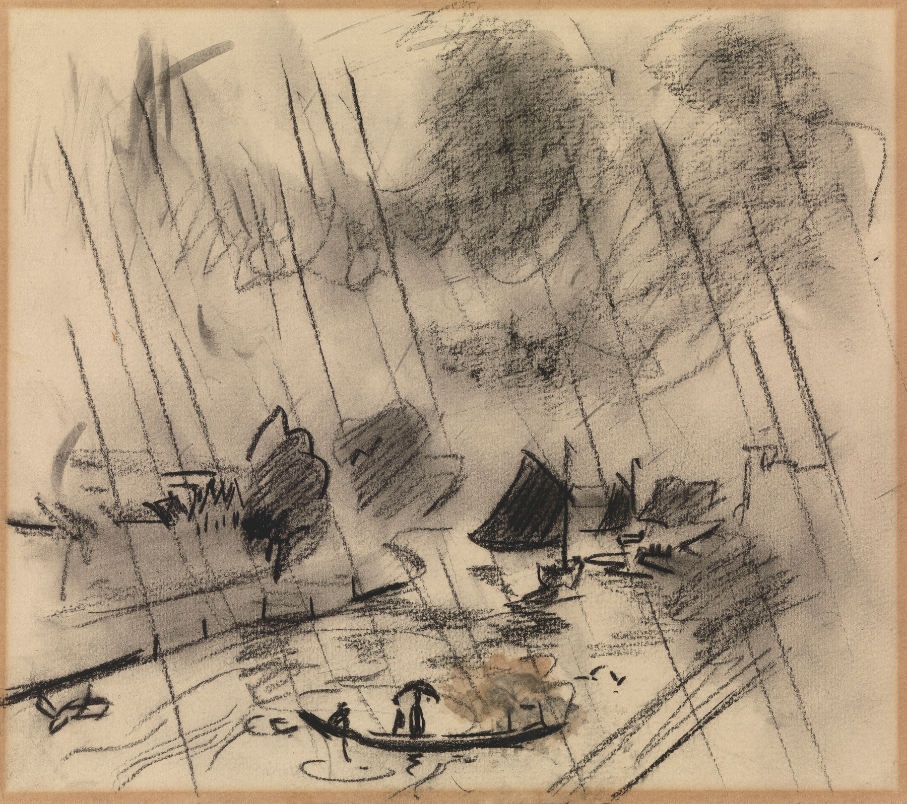

Introduction
Do you ever feel like a plastic bag drifting through the wind?1
If you read this, you probably know me. I like to think, grow, and reflect. Let me give you a window into my world. This is a series of posts where I will reflect on my personal journey. Welcome to When you do not know where to go.
When you do not know where to go.
I am absolutely mesmerized by the devotion of the practitioners in the BBC show Sacred Wonders. This show showcases how faith drives ordinary individuals to do amazing things. From the Shaolin warrior monks to the bearers of the Esperanza throne, and the masons of the Djenne Great Mosque, they seem guided by forces greater than themselves, uncovering their true selves in the process.
I often compare this kind of drive in life to the Andalusian shepherd boy from The Alchemist. A tale by Paulo Coelho following the main character in pursuit of his Personal Journey. The main theme to abandon the familiar and chase a dream is profoundly inspiring. It is a fixed journey. But when I revisit its pages, I encounter paragraphs full of life lessons that evoke a sense of envy. The transformation of the shepherd boy on his adventure is beautiful to witness, and something I want to experience first-hand.
Yet, if I were to think what dream I’d willingly forsake everything for, I come up empty-handed.
“My Heart Is Afraid that it will have to suffer, [in pursuit of his dreams]” the boy told the alchemist one night as they looked up at the moonless sky. “Tell your heart that the fear of suffering is worse than the suffering itself. And that no heart has ever suffered when it goes in search of its dreams.” — The Alchemist
The Never-Ending Journey
While The Alchemist inspires me, it is Siddhartha by Herman Hesse that resonates most deeply within me. In this beautiful novel, the protagonist embarks on a spiritual journey, defying the wishes of his family and forsaking his home. His journey meanders through various roles as he seeks enlightenment. His encounters include the Buddha himself, a wise ferryman, and a woman of unparalleled beauty, all intertwining in a narrative that encapsulates the pursuit of the seemingly unattainable.
The protagonist’s transformation stems from his quest to vanquish an ever-present sense of emptiness. Born into the Brahman caste, scholarly pursuits revealed themselves as conduits to restlessness, not peace. He then embarked on a journey as a Samana, forsaking materialistic trappings and embracing the life of a beggar. Yet, in his pursuit of solace through meditation and fasting, he uncovered that these practices offered mere escape, rather than true self-discovery. As a disciple of the Buddha, while the teachings were profound, they also underlined the individual nature of the journey, a pilgrimage each must navigate personally to attain enlightenment. Every role left him unfulfilled in some way, as they were too focussed on one particular aspect rather than the holistic nature of life.

Both books are about self discovery on a journey, however, there is something more immersive with Siddhartha, as he cannot find his conclusion in just one part of his life. Ultimately, his enlightenment isn’t found in the expected places, but serendipitously, besides a river. I’ll not spoil the rest as I believe the story is worth reading yourself. It’s a beautiful conclusion and made me take a step back to reassess my perspective on life. I realized that I sensed a similar absence in my existence—a repetitive routine, each life stage prescribed as an obligatory chore: school, job, and so on. It took time for me to acknowledge that neither my academic achievements nor work accomplishments could fill the void.
“When someone seeks,” said Siddhartha, “then it easily happens that his eyes see only the thing that he seeks, and he is able to find nothing, to take in nothing because he always thinks only about the thing he is seeking, because he has one goal, because he is obsessed with his goal. Seeking means: having a goal. But finding means: being free, being open, having no goal.” — Siddhartha
The Starting Point
No, I do not have the same drive as these extreme practitioners. I don’t envy their feats, but rather, their sense of fulfilment. In today’s world, attaining this feeling is not simple. For me, what is there to be proud of?
My parents came from a village in a mountainous region of China. My mom tells me stories about using icicles as dinner to satisfy their hunger during the winter. On the other side, my dad once cut trees, hauling them down mountainsides to construct homes. With minimal education, they relocated to the Netherlands in pursuit of a better life for their family. Which was all but easy, coming to a foreign country with different customs and systems with an enormous language barrier.
I recognize that the opportunities and upbringing that moulded me into the person I am today would not have been accessible if I were born in China. We came from far and while I am grateful, my own achievements pale in comparison.
My random achievements—earning cum laude at TU Delft, triumphing over social anxiety to become a board member, conquering my swimming phobia at age 25, and finding a good job—often fail to evoke substantial pride. It’s akin to reaching a mountaintop by car versus hiking with a burdensome backpack. The vista might be the same, yet the sense of accomplishment is different. While it feels daunting at first, I often look back: was that it?
Finding It
But even without this background, it is even more harmful when you start degrading your own achievements in life. At some point the achievements will blend together to become a grey blend of nothing. Part of the daily routine. While reading Daniel Kahneman’s Thinking, Fast and Slow, I stumbled upon an intriguing insight. Supported by multiple experiments, our emotional peaks and endings2 dominate our overall feelings about an experience. Applying this to my own accomplishments, the sense of pride seems to get overshadowed by the stress (peak) and fatigue (end). There’s a mismatch between the actual experience and my memory of it.
I feel this might be one of the reasons why I have been directionless for quite a long time. Letting myself being swept wherever the wind blows. And to be honest, I don’t really know how to find a purpose in life. But so far, I have been enjoying the ride. By comparing the Alchemist and Siddhartha, I realized, the search can become never-ending. Longing for more and better every time. But it does give our life a certain meaning, a way for our heart to express itself. See the progress and challenges along the way.
Unfortunately, I will have to end this post as directionless as I started it. But that is ok, there is a chance I might go on an epic journey at some point. Or not. I might keep searching and never finding it till I get old. Or not. But for now, I am happy with the progress I have made to face such a journey.
Don’t feel guilty if you don’t know what you want to do with your life. The most interesting people I know didn’t know at 22 what they wanted to do with their lives. Some of the most interesting 40-year-olds I know still don’t. - Wear Sunscreen